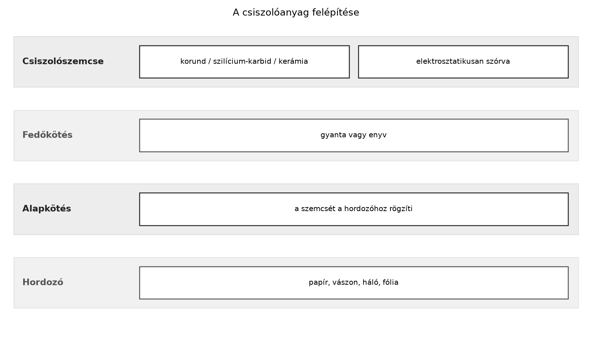

Képzeld el, hogy egy tölgyfa asztallapot gyalultál, és az utolsó simítás előtt apró, fényben megcsillanó hullámokat látsz a felületen. Ha egyből lakkoznál, ezek a gyalunyomok a lakk alatt is látszanának, és a kész munkád hibásnak tűnne. A csiszolás az a finom megmunkálási lépés, amellyel a felületet egyenletessé, a festést vagy lakkozást pedig tapadóképesebbé tesszük. A csiszolás nem csak poros kellemetlenség: meghatározza a felületkezelés minőségét, a faanyag tapintását és a termék megjelenését.
A fejezetben először megismered a csiszolóanyag felépítését, a szemcseméret jelölését, a csiszolóanyag-formákat, majd a kézi csiszolás szabályait és a színlőpengét (műhelyi nevén ciklik). Ezután tudatosan választasz csiszolópapírt, elkerülöd a tipikus hibákat, és biztonságos, tiszta felületet készítesz fel.
Tarts egy darab csiszolópapírt a kezedben. A papír bevont oldalán apró, kemény szemcséket tapinthatsz. Ha a papírt meghajlítod, a szemcsék nem válnak le könnyen, mert kötőanyag rögzíti őket a hordozóhoz. Minél nagyobb a szemcse, annál durvábban vágja a fát; minél kisebb a szemcse, annál finomabb felületet hagy. Ugyanaz a csiszolóanyag más-más formában – ívben, tekercsben, korongban – ugyanazt az anyagot tartalmazza, csak más a használat módja.
A kézi csiszoláshoz a papírt egy csiszolótuskóra feszítjük, és a fa rostjával párhuzamosan mozgatjuk. A csiszolótuskó egyenletes nyomást ad, megvédi a kezünket, és megakadályozza, hogy a papír a fa rostját roncsolja.
Definíció. A csiszolóanyag olyan, szilárd szemcsékből álló réteg, amelyet hordozóra visznek fel, és a felületet apró, vágó mozdulatokkal simítja vagy anyagleválasztást végez. A csiszolószemcse a vágóél, a kötőanyag tartja a szemcsét a hordozón, a hordozó pedig a szemcsék rugalmas vagy merev alapja.

A csiszolószemcsék leggyakoribb típusai:
A szemcséket két réteg kötőanyag rögzíti: az alapkötés (a szemcse alsó részét a hordozóhoz ragasztja) és a fedőkötés (a szemcsék közét kitölti). Típusai: enyv/enyv (olcsó, nedvességre érzékeny), gyanta/enyv, gyanta/gyanta (hőálló, gépi csiszoláshoz), vízálló gyanta (nedves csiszoláshoz) (ellenőrizendő: gyártói adatlap). A szemcséket ma többnyire elektrosztatikusan szórják: az elektromos tér a szemcséket hegyükkel felfelé állítja, így élesebben vágnak; ez a felvitel módja, nem kötőanyag-típus.
A csiszolószemcsék eloszlása a hordozón lehet:
Szabály. A faipari csiszolóanyag kiválasztásakor anyag–szemcse–hordozó–forma sorrendben gondolkodj: mit csiszolunk, mekkora szemcsével, milyen hordozón, és milyen kézi vagy gépi formát igényel a művelet.
A hordozó a szemcséket hordozó alap. A faipari csiszolóanyagoknál:
A papír és vászon hátoldalán gyakran a szemcse méretét, a gyártó jelét és a típusát írják fel. A csiszolóanyag formája is fontos, mert a kézi csiszoláshoz más a megfogás, mint a gépi szalaghoz.
A csiszolószemcse méretét a P-sorozat szerint jelöljük. A jelölésben a P betű után szám áll, például P40, P80, P120, P240. Minél kisebb a szám, annál durvább a szemcse; minél nagyobb a szám, annál finomabb.
Szabvány. A csiszolószemcsék méretét az ISO 6344 szabványcsalád alapján a P-sorozat szerint jelölik (a szabványos tartomány kb. P12–P2500; ellenőrizendő: ISO 6344-2 és -3). A faipari gyakorlatban jellemzően P24-től P400-ig, a felületbevonatok finom csiszolásához P800-ig vagy finomabbig használunk. A pontos szabványszámot és a szemcse méretét határozza meg a mindenkori szabvány (ellenőrizendő: ISO 6344).
A szemcsesorrend azt mutatja meg, hogy milyen lépésekben csiszolunk. A lépés szabálya: ne ugorj nagyot a szemcseméretben, mert a durva szemcsék barázdáit a következő finomabb szemcsének ki kell egyenlítenie. A faiparban gyakori sorrend:
Gyors elv: a következő szemcse maximum 50–100 %-kal nagyobb számú legyen – például P80 után P120, de ne P80 után P240, mert az előző barázdákat nem távolítja el.
Az ábrán látszik, hogy P80-ról P180-ra a szemcse átmérője kb. 0,2 mm-ről 0,08 mm-re csökken; az interaktív változatban saját szemcsesorrendet állíthatsz össze, és a program kiírja a lépésenkénti százalékos ugrást.
Példa. Ha egy bükkfa asztallapot csiszolsz, először P80-nal szedd le a gyalunyomokat, majd P120-szal a P80 nyomait, végül P180-nal a felületet „magával viszed” a lakk alá. Ha P80-ról egyből P180-ra ugranál, halvány mély barázdák maradnának, és a lakk kiemelné őket.
A csiszolóanyagot a felhasználás szerint több formában vásárolhatod:
A csiszolóanyag-forma kiválasztása attól függ, hogy kézzel vagy géppel dolgozol, és milyen a felület. Kézi csiszoláshoz a hagyományos ív vagy tekercs a legolcsóbb, a tuskóra feszíthető.
A kézi csiszolás a faipar legalapvetőbb simítási módja. A csiszolópapírt csiszolótuskóra (csiszolófára) feszítjük; ez lehet fa, parafa, gumi vagy keményhab. A tuskó:
Technológiai lap. Csiszolótuskóval való kézi csiszolás tömörfa felületen.
Tipp. A csiszolópapírt ne hajtogasd össze erős éllel, mert a hajtás mentén a szemcsék leválnak. A tuskóra feszítés előtt a sima felületére enyhe ívet adhatsz, hogy jobban illeszkedjen.
Csiszolás közben a szemcsék közé fapor és gyantás anyag ragad. Ez az eltömődés („betömődés”) rontja a vágást, és a felületet megégetheti. A tömődést jelzi, hogy a papír fényes, csúszik, nem fog.
Gyakorlati tipp. Gyantás fafajhoz (fenyő, vörösfenyő) használj nyitott szórású papírt, vagy cserélj gyakrabban papírt. A tuskón lévő papírt időnként tiszta, száraz kefével vagy gumidugóval ütögessük le. Az eltömődött papírt ne „ébresszük fel” ragasztószalaggal vagy drótkefével, mert a szemcsék sérülnek; az oldószeres tisztítás pedig veszélyes.
A színlőpenge (szinlőpenge, műhelyben gyakran ciklik) hajlékony, téglalap alakú, vékony acéllemez, amelyet a fa felületének finom megmunkálására használunk. Nem csiszolóanyag, hanem forgácsoló szerszám: éles, szinte sorjas él, amellyel vékony, pókhálóvékonyságú forgácsot lehet lehúzni a fáról. A színlőpenge keményfán, különösen ragyás vagy váltakozó rostú felületeken hasznos, ahol a gyalugép vagy a gyalu kiszakítaná a rostot.
A színlőpenge előnyei:
Példa. Ha egy asztalos asztal lapján ellentétes rostot talál, a színlőpengét rostirányban vagy enyhén ferdén (kb. 15–30°-ban) húzza, így lekapja a kiálló rostokat anélkül, hogy kiszakadna a fa.
A színlőpenge élezése. A színlőpengén nem hagyományos vágóélt köszörülünk, hanem az élt kiegyengetjük, majd sorjázzuk.
Recept. A színlőpenge élezése lépésről lépésre:
Figyelem. A színlőpenge élezése és használata gyakorlást igényel. A sérült, kicsorbult élű pengét ki kell egyengetni, mert mély karcolást okoz. A színlőpenge acéllemeze vékony és hajlékony; ne erőltesd, ne hajlítsd el, és ne tartsd a kezed a húzás irányában.
Szabvány. A csiszolóanyag szemcseméretét az ISO 6344 szerinti P-sorozat jelöli (például P80). A csiszolóanyagok biztonsági követelményeit a gyártó adja meg; a gépi csiszolóanyagok jelölése tartalmazza a szemcse típusát, a kötőanyagot, a hordozót és a maximális fordulatszámot (ellenőrizendő: gyártói adatlap). A régi jelölésekben (például „80-as csiszoló”) a P jelölés hiányozhat; a modern címke P80-at ír.
Példa 1. Lucfenyő polc, nyers felület, lakk előtt.
Példa 2. Tömör tölgy asztallap, olajos felületkezelés alá.
Példa 3. Régi bútorlakk lecsiszolása, új bevonat előtt.
Hiba 1: Mély keresztkarcolások. Az ok az, hogy rostirányra merőlegesen vagy körkörösen csiszoltál, vagy túl durva szemcsét használtál. A javítás: kezdd elölről a megfelelő szemcsével, rostirányban.
Hiba 2: A felület „fényes”, de nem sima. Az ok az eltömődött csiszolópapír: a szemcsék közé fapor és gyantás anyag ragadt. A javítás: cserélj papírt, használj nyitott szórású vagy hálós anyagot.
Hiba 3: A csiszolópapír gyorsan szakad. Az ok a rosszul feszített papír, a tuskó éles éle, vagy az, hogy a papírt nem a megfelelő irányban húztad. A javítás: ellenőrizd a tuskóra feszítést, igazítsd a papírt, és ne húzd a szerszámot éles szögben a fa élébe.
Hiba 4: A színlőpenge karcol. Az ok a tompa vagy rosszul sorjázott él, esetleg a penge sérült. Javítás: köszörüld újra, ellenőrizd a sorja egyenletességét.
Egy asztalos egy négyszögletes bükk vágódeszka sorozatot gyárt. A gyalulás után a munkatárs P80-as csiszolót tekert a tuskóra, és gyorsan áthúzta a felületet. Ezután egyből P180-at használt, hogy időt spóroljon. A deszkák szépek lettek, de az olajozás után finom, fényes csíkok jelentek meg, amelyek a fényben látszottak. A hiba az volt, hogy a P80-as barázdákat a P180 nem távolította el teljesen. A megoldás: a felületet újra P100-zal vagy P120-szal, majd P180-nal csiszolták, és a csíkok eltűntek. A tanulság: ne ugorj szemcsét, és minden lépés után ellenőrizd a felületet süllyesztett fénnyel.
1. feladat (A) Sorold fel a csiszolóanyag felépítésének három fő részét és mindegyik funkcióját.
2. feladat (A) Milyen szemcsesorrendet használsz egy új tömörfa ajtólap lakkozás előtti kézi csiszolásához? Indokold a sorrendet.
3. feladat (B) Egy asztalos P80-as csiszolópapírt használt egy tölgyfa lapon, majd P150-et választott. Jó-e ez a lépés? Számold ki, hány százalékkal nőtt a szemcseszám, és ítéld meg a lépést.
4. feladat (B) Egy vászonhordozós csiszolószalag jelölése: korund, P120, zárt szórás. Milyen munkadarabhoz és géphez alkalmas? Indokold.
5. feladat (C) Egy régi bútor fenyőfelülete gyantás, és a P120-as papír folyton eltömődik. Milyen csiszolóanyagot és formát választasz, és miért? Írd le a teljes szemcsesorrendet is.
6. feladat (D) Készíts technológiai lapot egy tömörfa polc lakkozás előtti kézi csiszolásához P100 → P150 → P220 sorrenddel. Add meg az ellenőrzési pontokat és a színlőpenge alternatív használatát.
Önellenőrzés – válaszok
1. feladat megoldása
A csiszolóanyag három fő része: a csiszolószemcse
(vágóél, anyagleválasztás), a kötőanyag (a szemcséket a
hordozóhoz rögzíti), és a hordozó (papír, vászon, háló,
fólia), amely a szemcséket rugalmasan vagy mereven tartja.
2. feladat megoldása
Jó szemcsesorrend: P100 → P150 → P220. Indoklás: az új
ajtólap felületén finom gyalunyomok lehetnek, ezért közepes durvasággal
kezdjük (P100), majd fokozatosan finomítjuk. A lépések legfeljebb kb. 50
%-os ugrást mutatnak, ami megfelel a „lépés szabályának”.
3. feladat megoldása
A lépés P80-ról P150-re 87,5 %-os ugrás. Számítás:
Ez a gyakorlatban még éppen elfogadható, ha a P80-at utána nem kapkodva
használjuk, de jobb, ha P120-at iktatunk közbe, mert a 87,5 %-os ugrás a
gyantás vagy kemény fán már látható barázdákat hagyhat.
4. feladat megoldása
A korund szemcse szívós, fa csiszolására való. A P120 közepesen finom, a
zárt szórás kemény fához vagy lakkozott felülethez alkalmas. A
vászonhordozó hajlékony és szívós, ezért gépi
szalagcsiszolóhoz használjuk, például széles szalagú
csiszológépen tölgy vagy bükk ajtólap simítására.
5. feladat megoldása
A gyantás fenyőfelülethez nyitott szórású, korund
szemcséjű csiszolóanyagot választok, mert a gyanta nem tömíti
el gyorsan. A formája lehet hálós csiszolóív vagy
nyitott szórású papír. A szemcsesorrend: P100 → P150 →
P220. A hálós anyagnál a por átesik a lyukakon, így tovább
tiszta marad. Ha kézzel dolgozom, a tuskóra hálós ívet teszek; gépi
használatnál excenterhez hálós korongot.
6. feladat megoldása
Technológiai lap a tömörfa polc lakkozás előtti csiszolásához:
Egyéni védőeszköz és por. FFP2 (keményfánál, régi bevonatnál FFP3) légzésvédő, a port M osztályú porszívóval távolítsd el, ne fújd le sűrített levegővel.
A színlőpenge a P220-as csiszolás előtt is használható, ha ellentétes rostú, ragyás helyeket akarunk javítani; ilyenkor a pengét a fent leírt módon élezzük, és a hibás helyeken rostirányban húzzuk le.
A csiszolóanyag három fő részből áll: csiszolószemcséből, kötőanyagból és hordozóból. A szemcse lehet korund (fa), szilícium-karbid (lakk, kemény anyag) vagy kerámia (intenzív gépi). A szórássűrűség nyitott vagy zárt; puha, gyantás fához nyitott szórás való. A szemcseméretet a P-sorozat jelöli (ISO 6344); minél nagyobb a szám, annál finomabb a szemcse. A lépés szabálya: a következő szemcse legfeljebb kb. 50–100 %-kal legyen nagyobb számú. A csiszolóanyag formája ív, tekercs, szalag, korong, szivacs, háló. A kézi csiszolás alapja a csiszolótuskó, amelyik egyenletes nyomást ad, és a mozgatás rostirányban történik. A színlőpenge (ciklik) vékony acéllemez, amelyet kiegyengetünk és sorjázunk, majd vékony forgácsot húz le a keményfa felületéről. Továbbvitt eredmény. A csiszolóanyag-választás és a szemcsesorrend a csiszolási technológiák, a gépi csiszolás és a felület-előkészítés (Csiszolási technológiák felületkezelés alá és a méret-, minőség-ellenőrzés) fejezetben használjuk fel.
A fejezet a faipari csiszolóanyagok általános technológiáján alapul; a szemcseméret-jelölés az ISO 6344 szabványcsaládhoz kapcsolódik. A gyártói típusjelöléseket, a szórássűrűség százalékát, a maximális fordulatszámot és a pontos szabványszöveget a gyártói adatlap vagy a hatályos szabvány határozza meg (ellenőrizendő: ISO 6344, gyártói adatlap). A színlőpenge élezésének lépései a hagyományos műhelygyakorlatból származnak; az élezési szög és a sorjázási technika mestertől függhet.